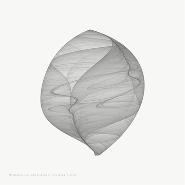
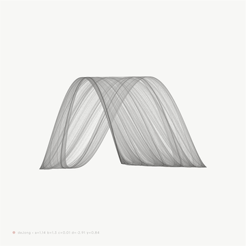
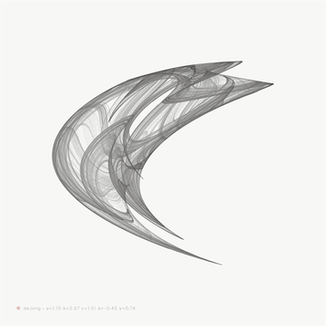
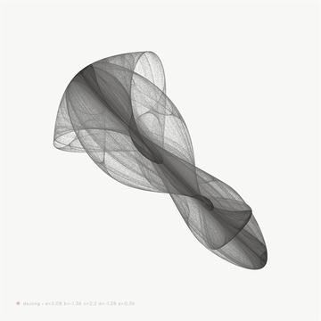
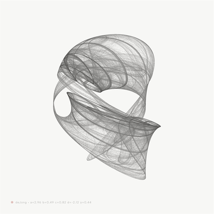

Type
05
Artist
++++

Structure
完璧な形を求めながら、
次々と新しい線を
繋がずにはいられない人
次々と新しい線を
繋がずにはいられない人
Fig.05 · 構造 / Six Facets
生年月日と日々の記録から、
思考・感情・行動のパターンを静かに読み解く、
生成型セルフポートレート。
A generative self-portrait for your inner structure.
その感覚は、弱さではなく、まだ読まれていない構造かもしれません。
性格診断ではなく、あなたの内側の動き方を読み解くセルフポートレート。
完璧さ、迷い、衝動、慎重さ。ばらばらに見える性質を、ひとつの輪郭として描き出します。





ひとつの視点だけでは、人の構造は見えてきません。
ALMANA は、複数の観測レンズを重ねながら、あなたを動かしている構造を読み解きます。
対話で、その日の状態をことばにする。記録が、日々静かに積もっていく。やがて、自分のパターンが見えてくる。
まずは、あなたの構造から。